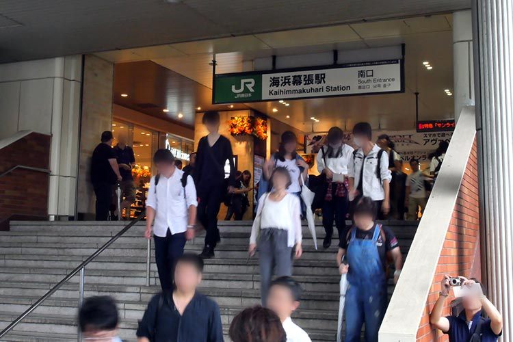

The first visit to TGS -Public Day Version-
初めてのTGS
～一般公開日編～TGSに初めて参加される方へ 写真でわかるTGSの歩き方
入場に関連して知っておきたいこと
一般来場者の入場
今年も、幕張メッセ南側の1-8ホール、北側の9-11ホールの全館を使って開催します。
一般来場者の初回入場ゲートは、1-8ホール側（西広場）と９-11ホール側（11ホール1階）に、それぞれ1カ所ずつ設けます。アクセス方法は下記のマップをご参照ください。
一般来場者の入場経路が従来と一部異なります。詳しくは当日の掲示・係員の指示などに従ってください。
-

1 JR 海浜幕張駅
-
2 南口を出て真っすぐ進む
-
3 「プレナ幕張」の前を右へ進み、道なりに左へ
-
4 歩道橋を上がる
-
5 歩道橋を上がったら右折し、9-11ホール側から入場する方は、そのまままっすぐ進む。1-8ホール側から入場する方は左折
1-8ホールへの経路
-
6→7→8 歩道橋をまっすぐ進み、突き当りを右へ下りる
-
7
-
8
-
9 一般来場者は大階段を上がらず、建物の右側をまっすぐ進む。各種専用入口をご利用の方は大階段を上がって中央エントランスへ。
-
10 建物（イベントホール）に沿って西広場へ
-

11 チケットをお持ちでない方は当日券販売所へ
-
12 手荷物検査を受けてから会場へ
-
13 海外来場者のチケット引換所
-
14 会場のゲートを超えたら、一般来場者とTGSサポーターズクラブチケットをお持ちの方で進行方向が分岐しますので、ご注意ください。
-
15 一般来場者のチケット回収場
-
16 本人確認を済ませた後、TGSサポーターズクラブ受付へ（所定の時間のみ）
-
17 TGSサポーターズクラブの特典お渡し所（所定の時間のみ）
9-11ホールへの経路
-
18→19 メッセモールを通り、案内に従って9-11ホール側一般来場者入口へ
-
19
-
20 チケットをお持ちでない方は当日券販売所へ
-
21 手荷物検査を受けてから会場へ
1-8ホール側は、幕張メッセ「西広場」で手荷物検査を受けてから、会場に進んでいただきます。待機列ができている場合は、案内に従って、列の最後尾にお並びください。
今年は、一部時間を除き、1ホール1階入口から展示会場内にご入場いただきます。（途中、8ホールからご入場いただく時間がある予定です）
9-11ホール側は、11ホール屋外の１階エリアで手荷物検査を受けてから、10ホール１階入口からご入場いただきます。待機列ができている場合は、案内に従って、列の最後尾にお並びください。
最初に1-8ホール側から入場するか、9-11ホール側から入場するか、目的のコーナーやエリアの場所をご確認の上、ご検討ください。 ただし、1-8ホールの混雑状況により、9-11ホール側からしかご入場いただけない場合がございますことを、あらかじめご了承ください。
-
●1-8ホールの主なコーナー
・一般展示コーナー
・スマートフォンゲームコーナー
・ゲームスクールコーナー
・ビジネスソリューションコーナー
・ニュースターズコーナー（アジア、東欧、ラテン）
・イベントステージ
-
●9-11ホールの主なコーナー
・物販コーナー
・ロマンスゲームコーナー
・VR/ARコーナー
・e-Sportsコーナー
・e-Sportsステージ「e-Sports X（クロス）」
・インディーゲームコーナー
・コスプレエリア（コスプレ更衣室）
●イベントホールの主なコーナー
・ファミリーゲームパーク
・フードコート
※４～６ホール南側屋外でも、ケータリングカーによるフード販売を行います。
-
なお、9-11ホール側からご入場される方は、以下についてご注意ください。
●10時30分まで9-11ホールからは出ることができません（10時30分まで1-8ホールに移動できません）。
●9-11ホール側から入場された方は、1-8ホールの一般来場者入場口で配布される試遊やステージなどの整理券を受け取ることはできません。

※入場ができるのは16時までです(再入場は16時30分まで)。
TGSサポーターズクラブチケットをお持ちの方の入場
「 TGS2018サポーターズクラブチケット 」をお持ちの方は、開場から一定時間は、1-8ホール側からでも、9-11ホール側からでも優先レーンにてご入場いただけます（一般来場者の入場待機列とは異なります）。
ただし、サポーターズクラブチケットで9-11ホール側からご入場される方は、その場で特典グッズ（Tシャツ、ピンバッジ）の受け取りができません。各自、11:00以降に1-8ホール2階中央エントランスのインフォメーション（下写真）でお引き換えください。
1-8ホール側からご入場される方は、手荷物検査のあと、専用受付でチケット確認および本人確認を済ませ、特典グッズ（Tシャツ、ピンバッジ）を受け取ってから、優先入場レーンにお進みください。
その後、整理券配布所でお渡しする整理券を希望する方の列と、希望されない方の列に分かれます。整理券は先着順となりますので、必ずしもご希望の整理券が受け取れるとは限らないことをあらかじめご了承ください。
なお、サポーターズクラブチケットをお持ちの方の専用受付と優先入場レーンは、事務局が予定した時間になりますと終了いたします。その後は、一般来場者と同じ入場動線となります。1-8ホール側からご入場の場合も、専用受付終了後の特典グッズの引き渡しは、2階中央エントランスのインフォメーションで当日（有効日）のみ行います。
開場は10時を予定していますが、サポーターズクラブチケットなど一部券種は、入場時間を繰り上げることがあります。
また、東京ゲームショウでは、ご来場にあたり、徹夜行為は一切禁止しております。お守りいただけない方は入場をお断りいたしますので、あらかじめご了承ください。
手荷物検査の場所
-
入場に際しては、安全確保を目的に、ご来場者全員の手荷物検査を実施いたします。持込禁止物の会場内へのお持ち込みは固くお断りさせていただきます。荷物はなるべく少なめに、手荷物検査をしやすい状態でご来場ください。
-
荷物の多い方（コスプレ参加の方など）は入場に時間がかかることが予想されます。お時間に余裕を持ってご来場ください。ペットボトルの中身を確認させていただく場合があります。
-
いったん幕張メッセの外に出て再入場される方、および各種専用入口（車いすの方専用入口、CESA会員校・出展校専用入口、ファミリーゲームパーク小学生以下専用入口など）からご入場の方も手荷物検査があります。 一般来場者の初回入場口の手前以外にも、1-8ホール側は、東エントランス、中央エントランス、西エントランス、9-11ホール側は、メッセモールに手荷物検査場を設けておりますので、ご協力をお願いいたします。
人気ゲームタイトルの試遊やイベントステージ入場の整理券を入手する方法
東京ゲームショウ2018では、場内の混雑緩和、危険防止のために、一部の出展社や主催者企画について、「ゲームタイトル体験整理券」「イベントステージ入場整理券」などを配布する予定です（いずれも限定枚数。枚数はタイトルなどによって異なります）。
整理券は、西広場の1-8ホール側一般来場者初回入口からお入りいただいた方のみが先着順に受け取れます（サポーターズクラブチケットをお持ちの方を含む）。
整理券を配布するタイトルやイベント、その配布方法は、会期直前に発表する予定ですので、公式サイトや公式アプリ「TGS2018」の「整理券情報」をお読みください。
「ファミリーゲームパーク」について知っておきたいこと
ファミリーゲームパークは、中学生以下とその保護者が入れるエリアです。場所は、イベントホールです。小学生以下は入場無料です（保護者の方は入場券が必要になります） 。（ファミリーゲームパークの概要はコチラ）
小学生以下のお子様と同伴の保護者の方は、初回入場口として、ファミリーゲームパーク小学生以下専用入口がご利用いただけます。2階中央エントランスや東・西エントランスからご入場いただき、イベントホール1階にお進みください。小学生以下のお子様と同伴ではない中学生は、一般来場者と同じ入口からお入りください。
※開場時間から10時30分までは、ファミリーゲームパークから出ることができません。 10時30分より前にご来場になり、一般展示を最初にご覧になりたい方は、一般来場者と同じ入口からお入りください。
-
ファミリーゲームパークでは、一般展示コーナーに出展している人気タイトルなどが家族で遊べるほか、小学生以下のお子様には、無料で駄菓子がもらえるお菓子券を用意しています。お菓子券のプリントアウトを忘れずにご持参ください。
ファミリーゲームパークにあるキッズステージ詳細は、会期直前に発表します。公式サイトや公式アプリ「TGS2018」の「キッズステージプログラム」をご確認ください。
-
なお、会場内には迷子のお子様を保護する「迷子センター」を設けますが、呼び出しを一切しておりません。お子様が迷子にならないようにご注意ください。
各種専用入口から入場する際の注意点
東京ゲームショウ2018では各種専用入口を各ホール2階に設けます。 CESA会員校・出展社校専用入口、付添いが必要なお体の不自由な方や車いすの方の専用出入口、TGSオフィシャルツアー専用入口など、該当する方は利用できます。2階中央エントランス、西エントランス、東エントランスよりご入場ください（一般来場者の初回入場はできません）。なお、東エントランスには当日券販売所がございませんので、ご注意ください。
なお、各種専用入口からご入場された方は、1-8ホール側一般来場者入口で配布予定の、「ゲームタイトル体験整理券」や「イベントステージ入場整理券」などは受け取れません。 各種整理券を受け取りたい方は、1-8ホール側一般来場者入口（西広場経由）からご入場ください（限定枚数なので配布が終了している可能性もあります）。